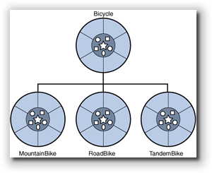
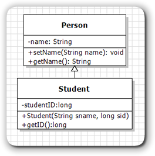
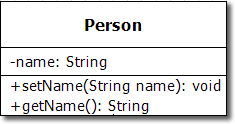
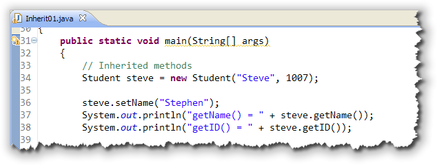
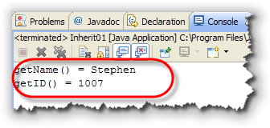
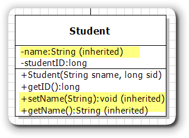

Classification is one of the
primary mechanisms that we
use to understand the natural world around us. Starting
as infants we begin to recognize the difference between
categories like food, toys, pets, and people.
 As we mature,
we learn to divide these general categories or classes into
subcategories like siblings and parents, vegetables and
dessert.
As we mature,
we learn to divide these general categories or classes into
subcategories like siblings and parents, vegetables and
dessert.
When faced with a new object, we try to understand it by fitting it into the categories with which we’re acquainted:
- Does it taste good? Perhaps it’s dessert.
- Is it soft and fuzzy? Maybe it’s a pet.
- Otherwise, it’s most certainly a toy of some sort!
Encapsulation—the specification of attributes and behavior as a single entity—allows us to build on this understanding of the natural world as we create software. By creating classes and objects that model categories in the "real world," we have confidence that our software solutions closely track the problems we are trying to solve.
Once we've learned how to design our own classes, instead of thinking in terms of computer files and variables, our programs can be expressed in terms of Customers, Invoices, and Products.
Introducing Inheritance
Inheritance adds to encapsulation the ability to express relationships between classes. Think back to the categories "desserts" and "vegetables." Cherry pie and broccoli are both, at least arguably, edible items; for humans, they belong to the food class.
Yet most of us recognize that, in addition to belonging to the food class, cherry pie is a kind of dessert, whereas broccoli is a kind of vegetable. Both desert and vegetable represent subcategories of foods.
If you ponder this for a moment, you’ll realize that you can draw three conclusions:
- Although both cherry pie and broccoli are kinds of food, the food class itself consists of, thankfully, more than just these two items. Cherry pie and broccoli are just two small subsets of all possible food types. Thus, the relationship between the food class and the cherry pie class is one of superset (food) and subset (cherry pie). In object-oriented terminology, we call this the superclass-subclass relationship.
-
Superclasses and subclasses can be arranged in a
hierarchy, with one superclass divided into
numerous subclasses, and each subclass divided into
more specialized kinds of subclasses. That’s what we
find with the food class.
It can be divided into desserts, vegetables, soups, salads, and entrees. Each category can be further divided into more specialized kinds of food.
- A classification hierarchy represents an organization based on generalization and specialization. The superclasses in such a hierarchy are very general, and their attributes few; the only thing that a class must do to qualify as food, for instance, is to provide nutrients.
As you move down the hierarchy, the subclasses become more specialized, and their attributes and behavior become more specific. Thus, although broccoli qualifies as food (it is, after all, digestible), it lacks the necessary qualifications to make it into the dessert class.
Inheritance and Programming
When you create your own new, reusable components, there are really three different strategies you can use:
- You can build your component completely from scratch,
like we did with the various versions of the
Ballclass in Chapter 11. - You can combine simpler parts together, such as
a
JLabeland aJTextField, to create a more complex component. - You can extend a more basic component by adding new features or behaviors.
Since you've already learned how to build a class from scratch, in this chapter we'll take a look at these last two techniques. We'll start by extending an existing component to create a new class that inherits methods and fields from its superclass.
Has-A and Is-A
These two different strategies are used to express two different kinds of "class relationships":
- The has-a relationship, when one class is a combination
of other objects. We can say that a
JLabelobject has-a background color property. In this kind of has-a relationship one component is composed of different parts. ABicycleclass thus may contain two instances of theWheelclass. 
The is-a relationship, when one class is an extension or "kind of" another class. The is-a relationship occurs when members of one class form a subset of another class, like the Animal, Mammal, Rodent example we discussed back at the beginning of Section 7.6—GImage and Friends. This is also called an inheritance relationship. In the inheritance relationship shown here, we'd say that aMountainBikeis-aBicycle.
Back in Chapter 11 we used the original applet version of a "bouncing
ball" program to develop, step-by-step, a bouncing-ball class;
one that contained constructors, accessors, and mutators, and that
"knew" how to bounce around the screen. The bouncing ball classes that
we developed, though, only worked in applets; they didn't work
as part of an ACM graphics program, because the classes weren't
members of the GObject family, like all of the
other ACM graphical objects.
In this chapter, we'll create two versions of the bouncing-ball class, both designed to work with ACM graphics programs. One will use inheritance, and one will use composition. Before we do that, though, let's look at how inheritance works in Java.
Inheritance: Syntax and Semantics
 It's really tempting to dive right
in and start by extending some of the ACM classes, making
a new ImageBall or PlayingCard
class, or perhaps fill in some of the missing geometric shapes;
anyone up for a new GNonagon class?
It's really tempting to dive right
in and start by extending some of the ACM classes, making
a new ImageBall or PlayingCard
class, or perhaps fill in some of the missing geometric shapes;
anyone up for a new GNonagon class?
The only problem with that strategy is that inheritance actually introduces quite a few new possibilities into your programs, and each of those possibilities needs to be handled in a very specific way. Starting with a more complex class, even though it might be more interesting, makes it easy to miss some of the details that you really must master to make effective use of the object-oriented technique of inheritance.
So, instead of working with fun stuff, like card games and shooting down aliens, we'll start by returning to the old, boring "finger-exercise" type of examples that let you concentrate on one piece of the inheritance puzzle at a time.
Topic 1: Extending a Class

When you create a new class using inheritance, you use theextends keyword to specify the parent or
superclass when you define the child or subclass.
For our first example, let's look at a simplest possible class
that represents people: the Person class. Then,
we'll create a new kind of Person, the
Student.
To the right is the UML (Unified Modeling Language) class diagram for the two classes we'll start with. You'll find the source code for the Java program that contains these classes, Interit01.java, in this chapter's code folder.
As we develop these classes,
instead of placing them in their own files, I'll put both classes
in a single file, along with a public test class. That way I
won't have to change the names or projects, since we'll have several
different versions. However, for the versions that you'll find in
your code folder, I have changed the names of the classes to
Student1 and Person1, so that you can run
them all in the same folder, without getting an error.
Here's what you should notice about each of these classes.
The Person Class

The Person class has a single attribute,name
which is stored as a String. The minus sign preceding
name tells us that the instance variable used to
store this attribute will be marked private.
The class has one mutator, setName() that allows
us to change the name of the Person. There is also
one accessor method, getName() which is a "getter"
method that allows us to read the value of the attribute. The
plus sign appearing before the method says that the method is
public. The void appearing at the
end of the entry is the method return type.
The Student Class
 The Student class is a subclass of
The Student class is a subclass of Person.
The hollow-headed arrow pointing from Student to
Person says that Student inherits
from or (in Java) extends the Person
class.
Student also has one private attribute, the
studentID which will be stored as a long.
To initialize both the student's name and their ID, the class
has a public constructor that takes two parameters.
The class has an accessor or "getter" method to retrieve the
value stored in the studentID field. There are no
methods to set or change the ID. While a student might change
their name (because of marriage, for instance) they can never
change their student ID.
Inherited Methods and Fields
Let's create an object of the Student class,
and then call some of the methods:


Notice that when I create theStudent object named
steve, I can call the getID() method,
which was defined in the Student class.
However, I can also call the setName()
and getName() methods which were not defined
in Student, but in Person. More
importantly, I'm also able to access the name
field in the Person class if I use these
methods. Why is that?
When we create Student objects, each subclass
object contains all of the attributes and methods
of its superclass. If we were to look at a "logical"
diagram of the student class, it would look something like
that shown here:

However, (and this is very important), most of the fields, and some of the methods will not be accessible to the subclass object, because they were declaredprivate in the superclass.
So, for instance,
if we were to change the Student constructor
so that it attempted to set the private name
field directly, (instead of using the setName()
method), we'd get an error like this:
 Even though you can't access the
Even though you can't access the private name field
from the subclass, the field is are there nonetheless. You know
that because the inherited setName() and
getName() methods work correctly.
Those methods (and fields) that are not declared private
in the superclass are called inherited methods (and fields).
An object may use its inherited methods and fields without any
further qualification, exactly as if they were defined inside
the object's own class (as I've done in the example here.)
While private methods are not inherited
at all, private instance variables are
inherited, in the sense that each subclass object contains
a copy of each private variable defined in
the superclass, even though the methods in the subclass
object are not free to directly access that variable.
The Protected Modifier
If a superclass wishes to allow a subclass access to an instance
variable, but not allow public access, the method
or field can be given the protected modifier.
Protected fields and methods are kind of half-way between
public and private; the children can
access them, but the general public cannot.
These different access specifiers work kind of the same way most
of us manage our households. My children are free to access the
refrigerator, getting a glass of orange juice without asking
me; you, on the other hand, would have to knock at the front
door, and ask first. My refrigerator has something similar to
protected access.
On the other hand, even my children aren't permitted to
grab my credit card and charge up a storm on the Internet;
my credit card is private.
Specialization and Extension
Normally, a subclass extends an existing
class by adding additional fields or methods. That is
because logically, a subclass represents specialization.
The Elephant class represents a specialized form of
Mammal, and the Mammal class represents
a specialized form of Animal.
In our case, the Student class added one new
field and one new method, along with a constructor.
Implicit Inheritance
Every class without an explicit extends clause
implicitly inherits from the Java root class
named Object. Just as with explicit inheritance,
the implicit subclass (Person) inherits
several fields and methods from its superclass.
One of these is the toString() method. Even though
neither the Person nor the Student
class have not defined a toString() method, we can
call the toString() method inherited from
the Object class like this:
 Of course, as you can see, the results are not very satisfying.
The
Of course, as you can see, the results are not very satisfying.
The Object version of toString() just
prints out the name of the class followed by the memory
address where the actual object is located in memory.
The example shown here explicitly calls
the inherited toString() method. The code can be
made even simpler, like this:
 When you use any kind of object with string concatenation like
I've done here, Java implicitly call's the object's
When you use any kind of object with string concatenation like
I've done here, Java implicitly call's the object's
toString() method to perform the concatenation.
Of course, as you can see, in this case the inherited method really doesn't work the way we'd like. Which brings us to the second inheritance topic: method overriding. Before we talk about that in the next section, though, let's return to the concept of variable scope from last chapter.
Scope and Inheritance
In Section 12.1—Variable & Method Scope, you saw that two instance variables in two different classes may have the same name, like this:
public class A { private int x = 3; }
public class B { private double x = 3.3; }
This works because both class A
and class B are different class scopes, so
the names don't clash with each other at all.
But what happens if we change the picture slightly, and make
class B a subclass of class A?
Then we end up with this piece of code:
public class A { int x = 3; }
public class B extends A { double x = 3.3; }
Surprisingly, this also is fine; however in this case the
instance variable x,
defined in class B, "shadows" or
"hides" the variable x
declared in class A, just like a local
variable hides an instance variable of the same name.
When a superclass instance variable is shadowed by a
subclass instance variable, the more local variable
takes precedence. In this case, if a method in class B
wished to make changes to the instance variable x declared
in class A, it would have to use the super
keyword like this:
public class B extends A
{
double x = 3.3;
public void methodOne()
{
x = 5.2; // This is in class B
super.x = 7; // This is from class A
}
}
This example only works if there is no
access specifier used when the original instance variable was
defined in class A, or, if the access specifier was
protected or public. If you make
your instance variables private, as recommended,
you won't have to deal with the complications of shadowing
with subclasses. You will still need to deal with
instance-variable/local-variable shadowing, though.

Extending Classes Summary
- Classification is a mental tool for combining similar kinds of objects into categories and subcategories. The hierarchical relationship between categories allow us to understand more complex real-world models.
- In Java, inheritance adds the ability to a hierarchy of classes which can share characteristics and behaviors.
- In a class hierarchy, the more general class is called a superclass, while the more specific classes, which are usually specialized kinds of the general class are known as subclasses.
- When a new class is created by adding new features to an existing class, using inheritance, we say (informally) that there is an is-a relationship between the original class and the new specialized class.
- To use inheritance in Java, you use the
extendskeyword in the class header. The class name following the keyword is the superclass for your new subclass. - All
publicfields and methods are inherited by the subclass exactly as if they had been declared inside the subclass. Anyprivatefields are inherited, but not accessible in the subclass. Anyprivatemethods are not inherited. - The
protectedmodifier, when applied to any superclass field or method allows unrestricted access in the subclass, but not to classes outside the "family". - If a new class does not have an explicit
extendsclause, then the implicitextends Objectis assumed. Every Java class ultimate descends from the class namedObject, and inherits all of its methods. - If a subclass creates an instance variable as the same
name as a variable in its superclass, the subclass
instance variable hides the superclass variable of
the same name. If the superclass instance variable is
private, then it is not accessible from the subclass. If it ispublicorprotectedthen the superclass variable can be accessed by using the prefixsuper.in your subclass.